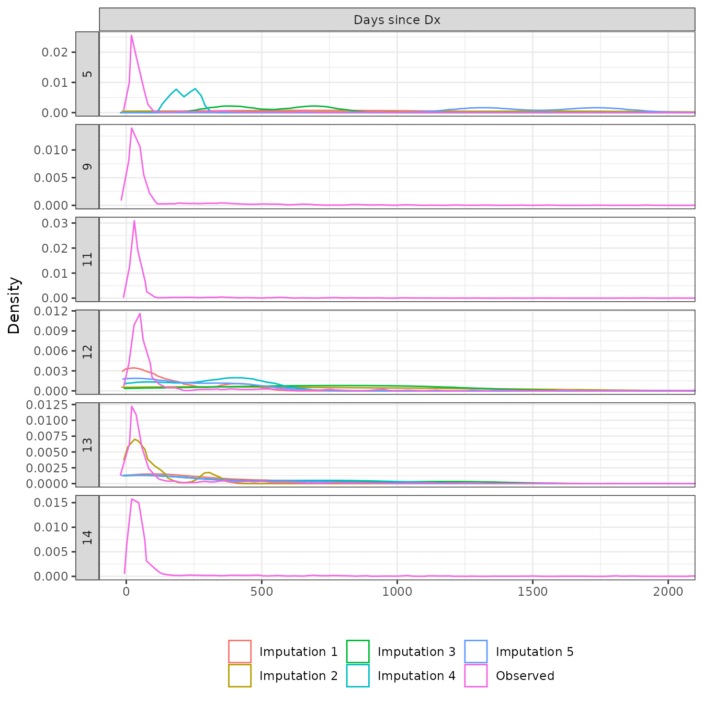

The purpose of this analysis is to impute missing values of the covariates. Multiple imputation is used so that there are \(M\) separate imputed datasets for each analysis. Although using outcome variables has been shown to improve imputation performance, is not used here so that propensity score modeling and covariate balancing can be performed without “peaking” at the outcomes. The following R packages are used.
We load the data in the same manner as in vignette("01-data-prep").
Model formulas for imputation are based on the variables included in the propensity score models (see vignette("03-balance") for a more detailed look at the propensity score models). We interact the data source with the propensity score variables so that there is effectively a separate imputation model for the trial and external control patients.
ps_form <- get_ps_formula(splines = FALSE, interaction = FALSE)
analysis <- readRDS("analysis-data-prep.rds") %>%
add_impute_formula(ps_form, interaction = TRUE)The imputation model is estimated using the Hmisc::aregImpute() function. Continuous predictors of target variables are transformed with restricted cubic splines (default of 3 internal knots). Predictive mean matching is used for imputation; by default, the imputation is performed by selecting the value of the target variable from the candidate donor that is the closest match. Bootstrapping is used to perform multiple imputation.
ec_rct1_list <- group_split(ec_rct1, analysis_num)
analysis$impute_model <- map2(ec_rct1_list, analysis$impute_formula, function (x, y) {
x$race_grouped <- droplevels(x$race_grouped)
aregImpute(y, data = x, n.impute = 5, nk = 3, match = "closest",
tlinear = TRUE, pr = FALSE)
})Missing values are then multiply imputed with multi_impute() which generates \(M\) new datasets with missing values imputed by leveraging the Hmisc::impute.transcan() function. The \(M\) complete datasets are stacked with a column imp identifying an imputation number.
analysis$impute_xdata <- map2(analysis$impute_model, ec_rct1_list, function (x, y) {
y$race_grouped <- droplevels(y$race_grouped)
multi_impute(x, data = y)
})We inspect the imputation by comparing observed values to imputed values. The distributions of the observed and imputed values are generally similar, expect for cancer stage in some cases. This either suggests that cancer stage is not missing completely at random (MCAR) or that the imputation model is poor. There is some evidence that these systematic differences occur because time since diagnosis is a very strong predictor of cancer stage, which would not violate the missing at random (MAR) assumption. As we can see in the plot below, the distribution of time since diagnosis values is very similar between patients with missing and early cancer stages, whereas patients with advanced cancers tend to have shorter times since diagnosis.
obsimp_cont <- map2(analysis$impute_model, analysis$impute_xdata, function (x, y) {
observed_vs_imputed(x, data = y, type = "continuous", labels = get_ps_vars())
}) %>%
setNames(analysis$analysis_num) %>%
bind_rows(.id = "grp")
autoplot(obsimp_cont) +
coord_cartesian(xlim = c(0, 2000))
ggplot(ec_rct1, aes(x = stage_grouped, y = days_since_dx)) +
geom_boxplot() +
facet_wrap(~analysis_num) +
xlab("Stage") +
ylab("Days since diagnosis")
saveRDS(analysis, file = "analysis-impute.rds")## R version 4.0.0 (2020-04-24)
## Platform: x86_64-pc-linux-gnu (64-bit)
## Running under: Ubuntu 18.04.5 LTS
##
## Matrix products: default
## BLAS: /usr/lib/x86_64-linux-gnu/openblas/libblas.so.3
## LAPACK: /usr/lib/x86_64-linux-gnu/libopenblasp-r0.2.20.so
##
## locale:
## [1] LC_CTYPE=en_US.UTF-8 LC_NUMERIC=C
## [3] LC_TIME=en_US.UTF-8 LC_COLLATE=en_US.UTF-8
## [5] LC_MONETARY=en_US.UTF-8 LC_MESSAGES=en_US.UTF-8
## [7] LC_PAPER=en_US.UTF-8 LC_NAME=C
## [9] LC_ADDRESS=C LC_TELEPHONE=C
## [11] LC_MEASUREMENT=en_US.UTF-8 LC_IDENTIFICATION=C
##
## attached base packages:
## [1] stats graphics grDevices utils datasets methods base
##
## other attached packages:
## [1] purrr_0.3.4 pins_0.4.5 kableExtra_1.3.4 Hmisc_4.5-0
## [5] Formula_1.2-4 survival_3.2-13 lattice_0.20-45 ggplot2_3.3.5
## [9] ecmeta.nsclc_0.1.0 dplyr_1.0.7
##
## loaded via a namespace (and not attached):
## [1] httr_1.4.2 sass_0.4.0 jsonlite_1.7.2
## [4] viridisLite_0.4.0 splines_4.0.0 bslib_0.3.0
## [7] assertthat_0.2.1 highr_0.9 latticeExtra_0.6-29
## [10] yaml_2.2.1 pillar_1.6.3 backports_1.2.1
## [13] glue_1.4.2 digest_0.6.28 RColorBrewer_1.1-2
## [16] checkmate_2.0.0 rvest_1.0.1 colorspace_2.0-2
## [19] htmltools_0.5.2 Matrix_1.3-4 pkgconfig_2.0.3
## [22] scales_1.1.1 webshot_0.5.2 svglite_2.0.0
## [25] jpeg_0.1-9 htmlTable_2.2.1 tibble_3.1.5
## [28] farver_2.1.0 generics_0.1.0 ellipsis_0.3.2
## [31] cachem_1.0.6 withr_2.4.2 nnet_7.3-16
## [34] magrittr_2.0.1 crayon_1.4.1 memoise_2.0.0
## [37] evaluate_0.14 fs_1.5.0 fansi_0.5.0
## [40] xml2_1.3.2 foreign_0.8-81 textshaping_0.3.5
## [43] tools_4.0.0 data.table_1.14.2 lifecycle_1.0.1
## [46] stringr_1.4.0 munsell_0.5.0 cluster_2.1.2
## [49] compiler_4.0.0 pkgdown_1.6.1 jquerylib_0.1.4
## [52] systemfonts_1.0.2 rlang_0.4.11 grid_4.0.0
## [55] rstudioapi_0.13 rappdirs_0.3.3 htmlwidgets_1.5.4
## [58] base64enc_0.1-3 labeling_0.4.2 rmarkdown_2.11
## [61] gtable_0.3.0 DBI_1.1.1 R6_2.5.1
## [64] gridExtra_2.3 knitr_1.36 fastmap_1.1.0
## [67] utf8_1.2.2 filelock_1.0.2 rprojroot_2.0.2
## [70] ragg_1.1.3 desc_1.4.0 stringi_1.7.4
## [73] vctrs_0.3.8 rpart_4.1-15 png_0.1-7
## [76] tidyselect_1.1.1 xfun_0.26